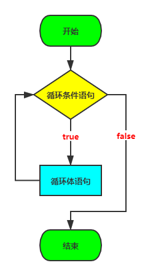
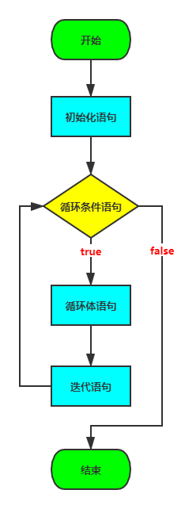

循环语句
循环语句主要包括for循环、while循环和do...while循环三种形式。
while循环
1、while循环语句标准格式：
while (循环条件语句①) {
循环体语句②；
}
注意：
while(循环条件)中循环条件必须是boolean类型
执行流程：
- 第一步：执行循环条件语句①，看循环条件语句的值是true，还是false；
- 如果是true，执行第二步；
- 如果是false，循环语句中止，循环不再执行。
- 第二步：执行循环体语句②；
- 第三步：循环体语句执行完后，重新从第一步开始再执行一遍
2、while循环语句扩展格式：
初始化语句①；
while (循环条件语句②) {
循环体语句③；
迭代语句④；
}
执行流程：
- 第一步：执行初始化语句①，完成循环变量的初始化；
- 第二步：执行循环条件语句②，看循环条件语句的值是true，还是false；
- 如果是true，执行第三步；
- 如果是false，循环语句中止，循环不再执行。
- 第三步：执行循环体语句③
- 第四步：执行迭代语句④，针对循环变量重新赋值
- 第五步：根据循环变量的新值，重新从第二步开始再执行一遍

语法演示案例1：遍历1-100之间的偶数
int num = 2;
while(num<=100){
System.out.println(num);
num+=2;
}
语法演示案例2：趣味折纸
/*
* 练习：趣味折纸
*
* 题目：
* 世界最高山峰是珠穆朗玛峰，它的高度是8844.43米，假如我有一张足够大的纸，它的厚度是0.1毫米。
* 请问，我折叠多少次，可以折成珠穆朗玛峰的高度?
*/
public class WhileTest01 {
public static void main(String[] args) {
//定义一个计数器，初始值为0
int count = 0;
//定义纸张厚度
double paper = 0.1;
//定义珠穆朗玛峰的高度
int zf = 8844430;
//因为要反复折叠，所以要使用循环，但是不知道折叠多少次，这种情况下更适合使用while循环
//折叠的过程中当纸张厚度大于珠峰就停止了，因此继续执行的要求是纸张厚度小于珠峰高度
while(paper <= zf) {
//循环的执行过程中每次纸张折叠，纸张的厚度要加倍
paper *= 2;
//在循环中执行累加，对应折叠了多少次
count++;
}
//打印计数器的值
System.out.println("需要折叠：" + count + "次");
}
}
do...while循环
1、do...while循环语句标准格式：
do {
循环体语句①；
} while (循环条件语句②)；
注意：
（1）while(循环条件)中循环条件必须是boolean类型
（2）do{}while();最后有一个分号
（3）do...while结构的循环体语句是至少会执行一次，这个和for和while是不一样的
执行流程：
- 第一步：执行循环体语句①；
- 第二步：执行循环条件语句②，看循环条件语句的值是true，还是false；
- 如果是true，执行第三步；
- 如果是false，循环语句终止，循环不再执行。
- 第三步：循环条件语句执行完后，重新从第一步开始再执行一遍
2、do...while循环语句扩展格式：
初始化语句①
do {
循环体语句②；
迭代语句③；
} while (循环条件语句④)；
执行流程：
- 第一步：执行初始化语句①，完成循环变量的初始化；
- 第二步：执行循环体语句②；
- 第三步：执行迭代语句③，针对循环变量重新赋值；
- 第四步：执行循环条件语句④，看循环条件语句的值是true，还是false；
- 如果是true，根据循环变量的新值，重新从第二步开始再执行一遍；
- 如果是false，循环语句中止，循环不再执行。
语法演示案例1：统计正数、负数个数
public static void main(String[] args) {
java.util.Scanner input = new java.util.Scanner(System.in);
int positive = 0;
int negative = 0;
int num;
do{
System.out.print("请输入整数（0）结束：");
num = input.nextInt();
if(num>0){
positive++;
}else if(num<0){
negative++;
}
}while(num!=0);
System.out.println("正数：" + positive + "个，负数：" + negative +"个");
}
练习：猜数
随机生成一个100以内的数，猜数字游戏
从键盘输入数，如果大了提示，大了，如果小了，提示小了，如果对了，就不再猜了，并统计一共猜了多少次
提示：随机数 Math.random()
double num = Math.random();// [0,1)的小数
public static void main(String[] args){
//随机生成一个100以内的整数
/*
Math.random() ==> [0,1)的小数
Math.random()* 100 ==> [0,100)的小数
(int)(Math.random()* 100) ==> [0,100)的整数
*/
int num = (int)(Math.random()* 100);
//System.out.println(num);
//声明一个变量，用来存储猜的次数
int count = 0;
java.util.Scanner input = new java.util.Scanner(System.in);
int guess;//提升作用域
do{
System.out.print("请输入100以内的整数：");
guess = input.nextInt();
//输入一次，就表示猜了一次
count++;
if(guess > num){
System.out.println("大了");
}else if(guess < num){
System.out.println("小了");
}
}while(num != guess);
System.out.println("一共猜了：" + count+"次");
}
for循环
循环语句可以在满足循环条件的情况下，反复执行某一段代码，这段被重复执行的代码被称为循环体语句，当反复执行这个循环体时，需要通过修改循环变量使得循环判断条件为false，从而结束循环，否则循环将一直执行下去，形成死循环。
1、for循环语句格式：
for(初始化语句①; 循环条件语句②; 迭代语句④){
循环体语句③
}
for(;;){
循环体语句块；//如果循环体中没有跳出循环体的语句，那么就是死循环
}
注意：
（1）for(;;)中的两个；是不能多也不能少
（2）循环条件必须是boolean类型
（3）如果循环条件语句②省略的话，就默认为循环条件成立
执行流程：
- 第一步：执行初始化语句①，完成循环变量的初始化；
- 第二步：执行循环条件语句②，看循环条件语句的值是true，还是false；
- 如果是true，执行第三步；
- 如果是false，循环语句中止，循环不再执行。
- 第三步：执行循环体语句③
- 第四步：执行迭代语句④，针对循环变量重新赋值
- 第五步：根据循环变量的新值，重新从第二步开始再执行一遍

语法演示案例1：打印10次的HelloWorld
public class ForDemo01 {
public static void main(String[] args) {
//控制台输出10次HelloWorld，不使用循环
System.out.println("HelloWorld");
System.out.println("HelloWorld");
System.out.println("HelloWorld");
System.out.println("HelloWorld");
System.out.println("HelloWorld");
System.out.println("HelloWorld");
System.out.println("HelloWorld");
System.out.println("HelloWorld");
System.out.println("HelloWorld");
System.out.println("HelloWorld");
System.out.println("-------------------------");
//用循环改进，循环10次
//定义变量从10开始，循环条件为<=10
for(int x = 1; x <= 10; x++) {
System.out.println("HelloWorld"+x);
}
}
}
语法演示案例2：打印1-5和5-1
/*
* 练习：利用for语句打印1-5和5-1
*/
public class ForTest01 {
public static void main(String[] args) {
//原始做法
System.out.println(1);
System.out.println(2);
System.out.println(3);
System.out.println(4);
System.out.println(5);
System.out.println("===============");
//用循环改进
for(int x=1; x<=5; x++) {
System.out.println(x);
}
System.out.println("===============");
//1-5的数据我们获取到了，如何获取5-1呢?
for(int x=5; x>=1; x--){
System.out.println(x);
}
}
}
语法演示案例3：求出1-5之间数据之和
/*
* 练习：求出1-5之间数据之和
*
* 分析：
* 1.定义求和变量，初始化值是0
* 2.获取1-5之间的数据，用for循环实现
* 3.把每一次获取到的数据，累加起来就可以了
* 4.输出求和变量即可
*/
public class ForTest02 {
public static void main(String[] args) {
//定义求和变量，初始化值是0
int sum = 0;
//获取1-5之间的数据，用for循环实现
for(int x=1; x<=5; x++) {
//把每一次获取到的数据，累加起来就可以了
//sum = sum + x;
/*
* 第一次：sum = 0 + 1 = 1
* 第二次：sum = 1 + 2 = 3
* 第三次：sum = 3 + 3 = 6
* 第四次：sum = 6 + 4 = 10
* 第五次：sum = 10 + 5 = 15
*/
sum += x;
}
//输出求和结果
System.out.println("sum:" + sum);
}
}
语法演示案例4：求出1-100之间偶数和
/*
* 练习：求出1-100之间偶数和
*
* 分析：
* 1.定义求和变量，初始化值是0
* 2.获取1-100之间的数据，用for循环实现
* 3.把获取到的数据进行判断，看是否是偶数
* 如果是，就累加
* 4.输出求和结果
*/
public class ForTest03 {
public static void main(String[] args) {
//定义求和变量，初始化值是0
int sum = 0;
//获取1-100之间的数据，用for循环实现
for(int x=1; x<=100; x++) {
//把获取到的数据进行判断，看是否是偶数
if(x % 2 == 0) {
sum += x;
}
}
//输出求和结果
System.out.println("sum:"+sum);
}
}
循环语句的区别
- 从循环次数角度分析
- do...while循环至少执行一次循环体语句
- for和while循环先循环条件语句是否成立，然后决定是否执行循环体，至少执行零次循环体语句
从循环变量的生命周期角度分析
- for循环的循环变量在for()中声明的，在循环语句结束后，不可以被访问；
- while和do...while循环的循环变量因为在外面声明的，所以while和do...while结束后可以被继续使用的；
如何选择
- 遍历有明显的循环次数（范围）的需求，选择for循环
- 遍历没有明显的循环次数（范围）的需求，循环while循环
- 如果循环体语句块至少执行一次，可以考虑使用do...while循环
- 本质上：三种循环之间是可以互相转换的，都能实现循环的功能
三种循环结构都具有四要素：
- （1）循环变量的初始化表达式
- （2）循环条件
- （3）循环变量的修改的迭代表达式
- （4）循环体语句块